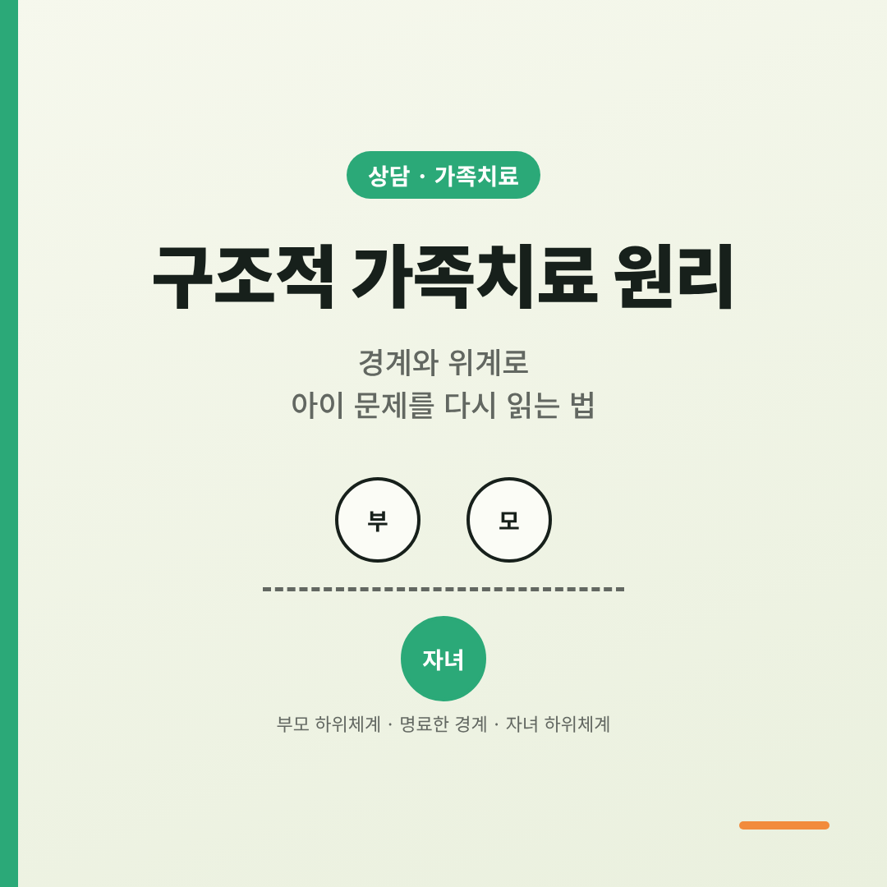
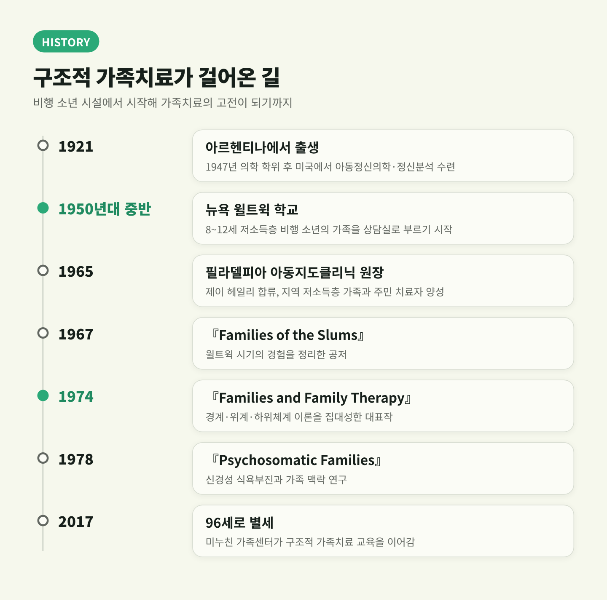
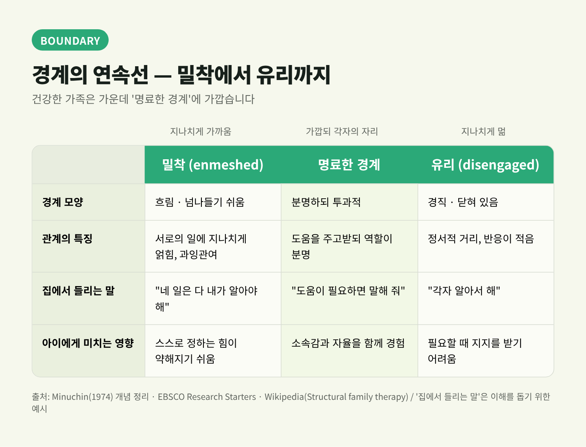
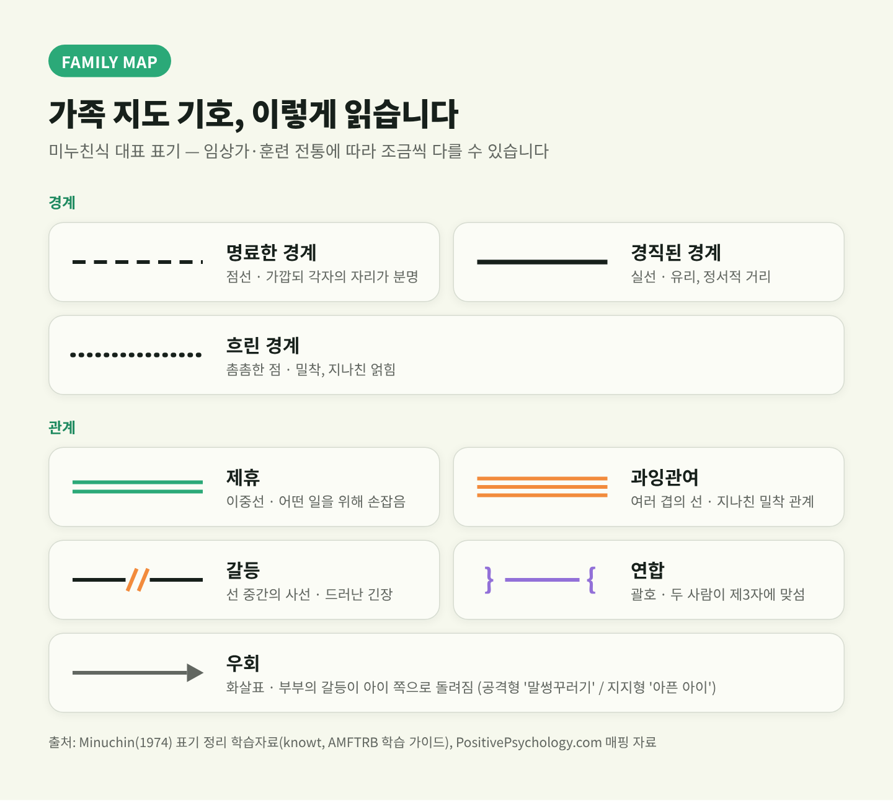
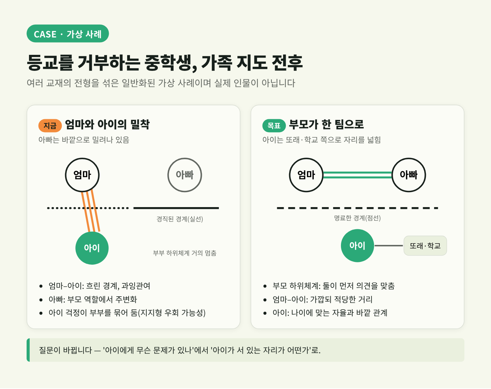
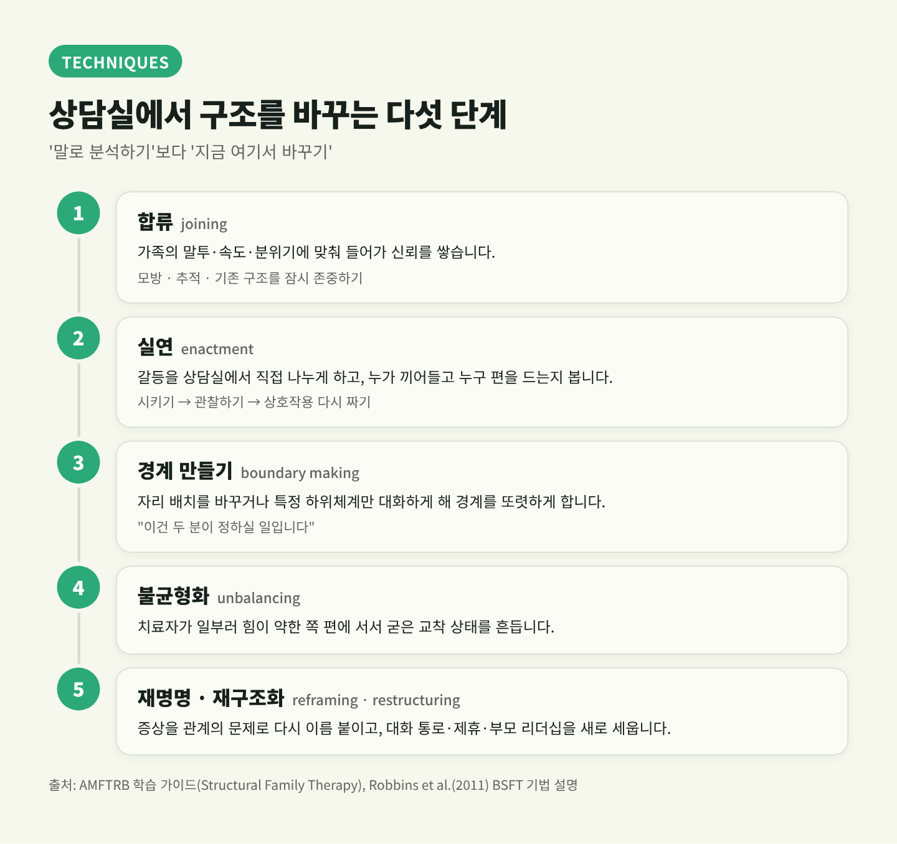
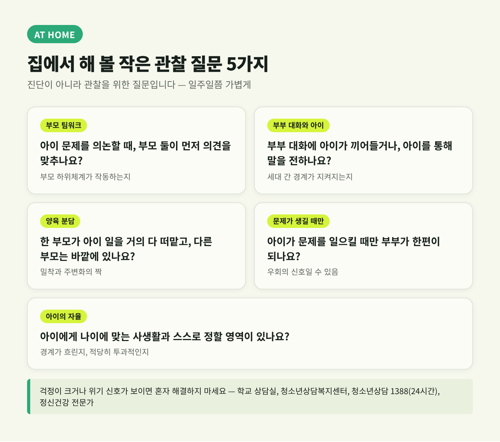

구조적 가족치료 원리 — 경계와 위계로 아이 문제를 다시 읽는 법

이번 글에서는 살바도르 미누친의 구조적 가족치료를 정리해 보겠습니다. 아이에게 생긴 문제를 아이 한 사람이 아니라 가족의 '배치'에서 읽는 관점입니다. 경계, 위계, 하위체계라는 세 단어만 손에 쥐어도 집안 풍경이 조금 다르게 보입니다.
세 줄 요약
- 구조적 가족치료는 증상을 개인의 결함보다 가족 안의 경계·위계·연합이 만든 결과로 봅니다.
- 치료자는 가족에 합류한 뒤, 상담실 안에서 실제 상호작용을 일으켜(실연) 구조를 바꿉니다.
- 초기 성과 보고는 인상적이었지만 방법론 한계가 컸고, 이후 연구는 부분적인 지지에 머뭅니다.
■ 비행 소년의 집에서 시작된 질문
미누친은 1921년 아르헨티나에서 태어났습니다. 1947년 의학 학위를 받은 뒤 미국에서 아동정신의학과 정신분석을 수련했습니다.
1950년대 중반, 그는 뉴욕의 윌트윅 학교에서 일했습니다. 8~12세 저소득층 소년들이 머무는 시설이었고, 상당수가 소년법원과 얽혀 있었습니다. 아이만 따로 불러 상담하는 방식은 잘 통하지 않았습니다.
그래서 가족을 상담실로 불렀습니다. 지금은 익숙하지만 당시에는 파격이었습니다. 미누친은 훗날 에세이에서 그 시절을 이렇게 회고했습니다. 당시엔 "부모는 솔직히 아이에게 해로운 존재로 여겨졌다"고요.
예전엔 아이를 가족에게서 떼어 내 고치려 했습니다. 그는 반대로 가족을 치료의 주인공으로 세웠습니다.
이 가족들은 감정을 말로 풀어내기보다 행동으로 드러냈습니다. 자연히 치료자가 더 능동적으로 제안하고 지시하는 방식이 다듬어졌습니다. 동료들은 일방경 뒤에서 서로의 회기를 지켜보며 배웠습니다. 그 경험은 1967년 『Families of the Slums』로 묶였습니다.
1965년 그는 필라델피아 아동지도클리닉 원장이 됩니다. 제이 헤일리가 합류했고, 클리닉은 인근 저소득층 가족에게 눈을 돌렸습니다. 지역 주민을 가족치료자로 길러 내는 프로그램도 운영했습니다. 그리고 1974년, 이론을 집대성한 『Families and Family Therapy』가 나왔습니다.

■ 가족을 읽는 세 개의 렌즈
구조적 가족치료의 출발점은 단순합니다. 사람의 행동은 그 행동이 일어나는 관계 맥락이 빚는다는 것입니다. 아버지가 아들에게 소리를 지를 때, 구조적 치료자는 "저 둘 사이와 그 주변에서 무슨 일이 벌어지고 있는가"를 묻습니다.
여기서 '구조'란 눈에 보이지 않는 규칙의 묶음입니다. 누가 누구에게 말을 걸고, 누가 결정하고, 누가 빠지는지에 관한 반복 패턴입니다. 이 구조를 읽는 렌즈가 세 가지 있습니다.
첫째, 하위체계입니다. 가족은 한 덩어리가 아니라 여러 작은 단위로 이뤄집니다. 부부 하위체계, 부모 하위체계, 형제 하위체계, 그리고 개인입니다. 같은 두 사람이라도 '부부'일 때와 '부모'일 때 맡는 과업이 다릅니다.
둘째, 경계입니다. 경계는 하위체계에 누가, 어떻게 참여하는지 정하는 규칙입니다. 한쪽 끝은 밀착(enmeshed)입니다. 경계가 흐려 서로의 일에 지나치게 얽힙니다. 반대쪽 끝은 유리(disengaged)입니다. 경계가 단단해 정서적 거리가 멀고 반응이 적습니다. 가운데가 명료한 경계입니다. 가깝되 각자의 자리가 분명합니다.
밀착된 가족에서는 아이가 스스로 방향을 정하는 힘을 잃기 쉽습니다. 가족에 압력이 커지면 그 아이가 '지목된 환자'가 되기도 합니다.
셋째, 위계입니다. 기능하는 가족에서는 부모 하위체계가 자녀보다 결정 권한을 가집니다. 위계가 뒤집히면 문제가 생깁니다. 예를 들어 부재한 배우자를 대신해 큰아이가 부모 노릇을 떠맡는 경우입니다. 권한도, 발달상의 준비도 없이 짐만 지는 셈입니다.

■ 누가 누구 편인가 — 제휴, 연합, 우회
경계와 위계 위에 '편 가르기'의 지도가 겹칩니다.
제휴는 두 사람이 어떤 일을 위해 손잡는 것입니다. 그 자체로는 자연스럽습니다. 연합은 두 사람이 제3자에 맞서 뭉치는 것입니다. 특히 한 부모와 아이가 다른 부모에 맞서는 세대 간 연합은 위계를 무너뜨립니다.
우회(detouring)는 조금 더 은밀합니다. 부부 사이의 갈등이 아이에게 돌려지는 패턴입니다. 아이를 '말썽꾸러기'로 함께 지목하면 공격형 우회입니다. 아이를 '아프고 약한 아이'로 함께 돌보면 지지형 우회입니다. 두 경우 모두 부부는 아이 문제로 하나가 되고, 정작 둘 사이의 갈등은 가려집니다.
이 관계들은 '가족 지도(family map)'라는 간단한 기호로 그립니다. 대표적인 표기로는 명료한 경계를 점선, 경직된 경계를 실선, 흐린 경계를 촘촘한 점으로 나타냅니다. 제휴는 이중선, 과잉관여는 여러 겹의 선, 갈등은 선 중간의 사선, 연합은 괄호로 표시합니다. 다만 기호와 약식 표기는 임상가와 훈련 전통에 따라 조금씩 다릅니다.

■ 등교를 거부하는 중학생 — 가상의 장면
구조적 관점이 실제로 어떻게 작동하는지 장면 하나로 그려 보겠습니다. 아래는 여러 교재의 전형을 섞어 만든 일반화된 가상 사례이며, 실제 인물이 아닙니다.
중학교 2학년 민준이는 두 달째 아침마다 배가 아프다며 학교에 가지 않습니다. 어머니는 회사에 늦어 가며 민준이 곁을 지킵니다. 숙제와 친구 관계까지 세세히 챙깁니다. 아버지는 늦게 귀가하고, 아이 문제는 "엄마가 알아서 하는 일"이라고 말합니다. 부부는 최근 거의 대화하지 않습니다.
개인 중심으로 보면 질문은 '민준이에게 무슨 문제가 있나'입니다. 구조적 치료자는 다른 지도를 그립니다.
- 어머니와 민준이 사이의 경계는 흐립니다(밀착).
- 아버지는 부모 하위체계에서 밀려나 있습니다(주변화, 경직된 경계).
- 부부 하위체계는 거의 작동하지 않습니다.
- 아이의 증상이 부부를 '아이 걱정'이라는 공통 주제로 묶어 두고 있을 가능성도 있습니다(지지형 우회).
이렇게 보면 목표도 달라집니다. 민준이를 설득하는 일만큼, 부모가 한 팀으로 서고 어머니와 아이 사이에 적당한 거리를 만드는 일이 중요해집니다.

■ 상담실에서 일어나는 일 — 다섯 가지 기법
구조적 가족치료의 특징은 '말로 분석하기'보다 '지금 여기서 바꾸기'에 있습니다.
합류(joining) 치료자가 먼저 가족의 말투와 속도, 분위기에 맞춰 들어갑니다. 가족이 쓰는 표현과 이야기를 따라가며 신뢰를 쌓습니다. 처음에는 기존 구조를 잠시 존중해 가족이 느끼는 위협을 줄입니다.
실연(enactment) 가족에게 갈등을 상담실에서 직접 나눠 보게 합니다. 치료자는 한 발 물러서서 누가 끼어들고 누가 누구 편을 드는지 봅니다. 그다음 끼어들기를 막거나 약한 쪽을 지지해 상호작용을 다시 짭니다. 가상 사례라면 아버지와 어머니가 "내일 아침 어떻게 할지"를 둘이서만 정해 보게 할 수 있습니다.
경계 만들기 자리 배치를 바꾸거나 특정 하위체계만 대화하게 해 경계를 또렷하게 합니다. 아이가 부모 대화에 끼어들면 "이건 두 분이 정하실 일"이라며 막아 줍니다.
불균형화(unbalancing) 치료자가 일부러 힘이 약한 쪽 편에 섭니다. 굳어 버린 교착 상태를 흔들기 위해서입니다. 공평함을 잠시 내려놓는 기법입니다.
재명명과 재구조화 "아이가 게을러서"를 "가족 안에서 아이가 맡게 된 역할"로 다시 이름 붙입니다. 그 위에 대화의 통로를 바꾸고, 제휴를 옮기고, 부모 리더십을 세우는 작업이 이어집니다.

■ 연구는 무엇을 말해 주나
가장 유명한 연구는 '심신성 가족(psychosomatic family)' 작업입니다. 미누친 팀은 밀착, 과보호, 경직성, 갈등 해결의 부재, 아이를 부부 갈등에 끌어들이는 삼각화를 특징으로 꼽았습니다. 1978년에는 『Psychosomatic Families』를 펴냈습니다.
필라델피아에서 치료한 신경성 식욕부진 환자 53명 가운데 약 86%가 성공적 결과를 보였다고 보고했습니다. 숫자는 인상적입니다. 하지만 한계도 분명했습니다. 치료팀이 직접 평가했고, 비교집단이 없었습니다. 추적 기간은 18개월에서 7년까지 들쭉날쭉했고, 상당수가 입원 치료를 먼저 받았습니다. 연구진 스스로도 임상시험을 표방하지 않았습니다.
이후 흐름은 신중합니다. 이 작업은 모즐리(Maudsley) 가족기반치료로 이어졌지만, 그 후속 모델은 가족 병리를 전제하지 않습니다. 밀착이 섭식장애의 원인이라는 종단 자료는 없다는 지적도 있습니다. 아픈 아이를 둔 결과로 가족이 밀착될 수도 있기 때문입니다. 1989년 장질환 아동 40가족을 관찰한 연구에서는 질병 활동성이 삼각화·부부 기능 문제와는 관련됐지만, 밀착·과보호·경직성과는 유의한 관련이 없었습니다.
구조적 기법은 단기 전략적 가족치료(BSFT)로도 이어졌습니다. 마이애미 대학의 호세 사포츠니크가 미누친의 구조적 접근과 헤일리의 전략적 접근을 묶은 모델입니다. 2011년 미국·푸에르토리코 8개 기관, 청소년 480명을 대상으로 한 무작위 시험에서 결과는 엇갈렸습니다. 치료에 아예 참여하지 않은 비율은 BSFT 11.4%, 일반 치료 26.8%였습니다. 부모가 보고한 가족 기능도 BSFT 쪽이 더 나아졌습니다(효과는 작음). 반면 청소년 약물 사용 궤적 자체에는 전체적으로 뚜렷한 차이가 없었습니다.
정리하면, 가족을 치료에 붙잡아 두고 관계를 바꾸는 데는 근거가 있고, 증상 자체에 대한 효과는 과장하기 어렵습니다.
■ 비판과 한계도 함께 봐야 합니다
첫째, 치료자의 권위입니다. 구조적 치료자는 적극적으로 지시하고 직면합니다. 동료들 사이에서는 미누친의 방식이 때로 지나치게 거칠다는 평가가 있었습니다. 미누친 자신도 2017년, 1980년대 녹화본을 보며 "지금이라면 더 부드럽게 하겠다"고 말했습니다.
둘째, 젠더 비판입니다. 페미니스트 치료자들은 이 모델이 성 역할과 권력 불균형을 충분히 다루지 않는다고 지적했습니다. '밀착'이라는 개념이 남성적 기준을 반영해 여성이 선호하는 관계 방식을 병리로 볼 수 있다는 비판도 있습니다. 세대 간 위계에 집중한 나머지 부부 사이의 폭력 같은 같은 세대 내 권력은 덜 다룬다는 점도 한계로 꼽힙니다.
셋째, 문화의 차이입니다. 밀착된 성인의 우울 보고가 영국에서 이탈리아보다 높았다는 연구가 있습니다. 가족 간 친밀함을 어디까지 '정상'으로 볼지는 문화마다 다릅니다. 가족 유대가 강한 한국 가정에 적용할 때도 이 점을 염두에 둘 필요가 있습니다.
그럼에도 미누친은 평생 빈곤과 차별을 겪는 가족 곁에서 일했습니다. '가족을 탓하자'가 아니라 '가족의 힘을 다시 배치하자'는 쪽에 가까운 이론입니다.
■ 집에서 해 볼 수 있는 작은 관찰 질문
진단이 아니라 관찰을 위한 질문입니다. 일주일쯤 가볍게 살펴보시길 권합니다.
- 아이 문제를 의논할 때, 부모 두 사람이 먼저 의견을 맞추는 시간이 있습니까.
- 부부끼리의 대화에 아이가 자주 끼어들거나, 아이를 통해 말을 전하지는 않습니까.
- 아이의 일을 한 부모가 거의 전부 떠맡고 다른 부모는 바깥에 서 있지는 않습니까.
- 아이가 문제를 일으킬 때만 부부가 한편이 되지는 않습니까.
- 아이에게 나이에 맞는 사생활과 스스로 정할 영역이 있습니까.
한두 개에 마음이 쓰인다면, 누구를 탓하기보다 '자리 배치'를 조금 바꿔 볼 신호로 받아들이시면 좋겠습니다.

정리하면 이렇습니다. 구조적 가족치료는 "문제가 있는 아이"를 "문제를 품고 있는 배치"로 다시 보게 합니다. 아이를 바꾸려 애쓰기 전에, 아이가 서 있는 자리를 먼저 살펴보자는 제안입니다.
다만 이 글의 질문은 출발점일 뿐입니다. 가족 갈등이 심하거나, 아이가 오래 등교하지 못하거나, 자해·폭력 같은 위기 신호가 보인다면 혼자 해결하려 하지 마시길 바랍니다. 학교 상담실, 지역 청소년상담복지센터, 정신건강의학과 전문의나 가족치료 전문가의 도움을 받으시길 권합니다. 청소년상담 1388은 365일 24시간 전화(휴대폰은 지역번호+1388), 문자, 카카오톡 채널로 청소년과 부모 모두 이용할 수 있습니다.
가족의 구조를 바꾸는 일은 느립니다. 그래도 누군가 한 걸음 물러서고 누군가 한 걸음 다가서면, 아이의 자리는 생각보다 빨리 넓어질 수 있습니다.
참고자료
- Wikipedia, Salvador Minuchin — https://en.wikipedia.org/wiki/Salvador_Minuchin
- Wikipedia, Structural family therapy — https://en.wikipedia.org/wiki/Structural_family_therapy
- Wikipedia, Enmeshment — https://en.wikipedia.org/wiki/Enmeshment
- Counseling Today(ACA), Salvador Minuchin 추모 기사 — https://ctarchive.counseling.org/?p=19370
- Penn Almanac, Salvador Minuchin, Child Psychiatry — https://almanac.upenn.edu/articles/salvador-minuchin-child-psychiatry
- Encyclopedia.com, Minuchin, Salvador — https://www.encyclopedia.com/medicine/encyclopedias-almanacs-transcripts-and-maps/minuchin-salvador
- EBSCO Research Starters, Structural family therapy — https://www.ebsco.com/research-starters/social-sciences-and-humanities/structural-family-therapy-sft
- Springer, Encyclopedia of Couple and Family Therapy: Structural Family Therapy — https://rd.springer.com/referenceworkentry/10.1007/978-3-319-49425-8_334
- AMFTRB 학습 가이드, Structural Family Therapy (Minuchin) — https://open-exam-prep.com/study-guides/amftrb/systemic-foundations-classical-models/structural-family-therapy
- PMC, 청소년 신경성 식욕부진 가족치료 리뷰 — https://pmc.ncbi.nlm.nih.gov/articles/PMC1414759
- PMC, 가족기반치료(FBT) 리뷰 — https://pmc.ncbi.nlm.nih.gov/articles/PMC2828763
- Wood et al.(1989), The "Psychosomatic Family" Model, Family Process — https://researchconnect.buffalo.edu/en/publications/the-psychosomatic-family-model-an-empirical-and-theoretical-analy/
- Robbins et al.(2011), BSFT 다기관 무작위 시험 — https://pmc.ncbi.nlm.nih.gov/articles/PMC3440775
- CrimeSolutions, Brief Strategic Family Therapy — https://crimesolutions.ojp.gov/ratedprograms/245
- 복지로, 365일 24시간 열려있는 '청소년상담 1388' — https://www.bokjiro.go.kr/ssis-tbu/cms/pc/news/promotion/1307645_1118.html